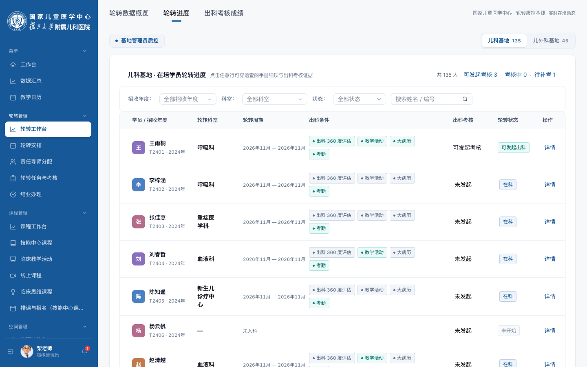
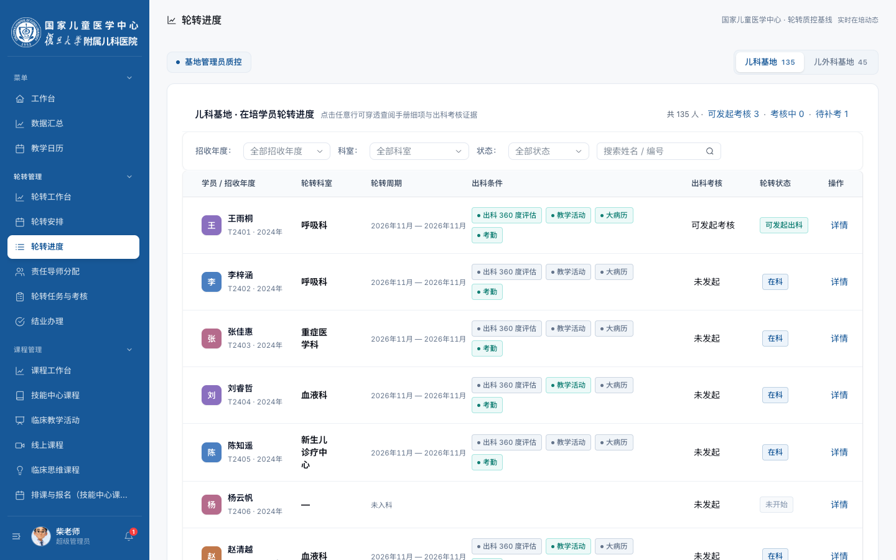
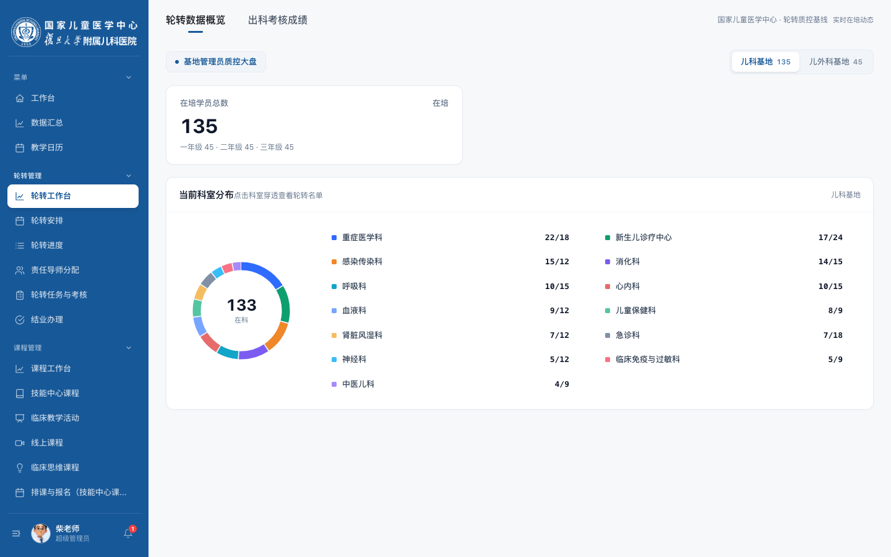
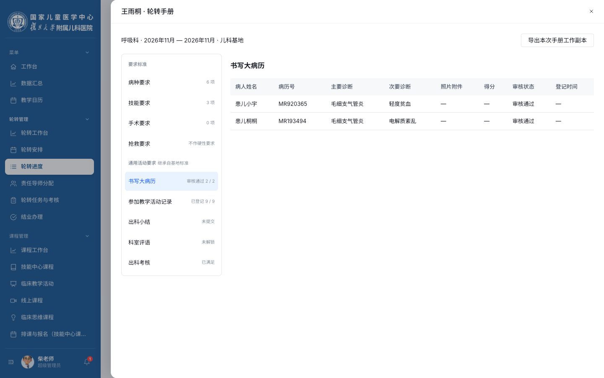
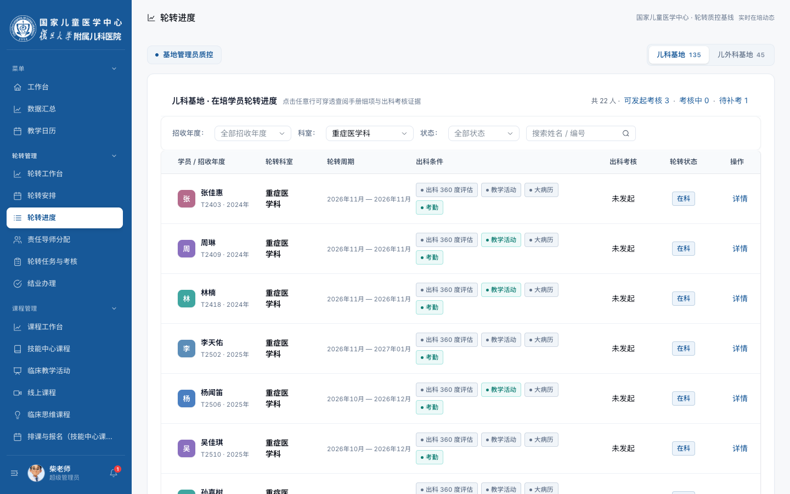
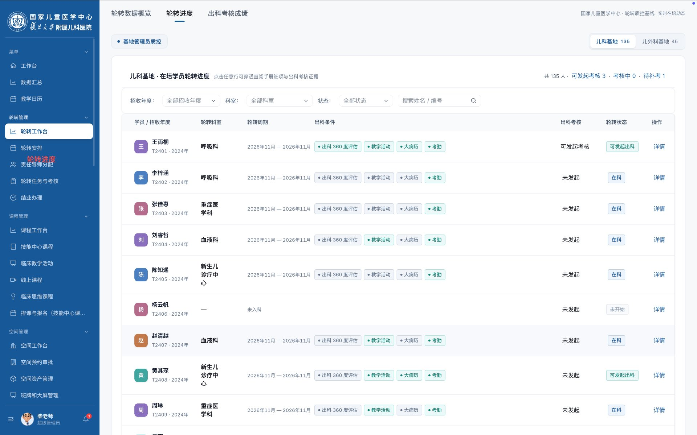

修改记录总清单（索引）
记录总数：1 项
| 序号 | 模块与改动主题 | 端别 | 定位 / 触发路径 | 涉及文件与留痕形式 |
|---|---|---|---|---|
| 01 | 轮转管理 · 轮转进度 Tab 拆为独立页 | PC端 | 院级管理员 → 轮转管理 → 轮转进度 | pages/轮转进度/ + pages/轮转工作台/ + nav-data.js + module-loader.js · 图文对比 |
轮转管理 · 轮转进度 Tab 拆为独立页
定位：院级/基地管理员 → 轮转管理 → 轮转工作台（改前在 Tab 内，改后为独立页）。实现：pages/轮转进度/page.js、pages/轮转工作台/page.js、shared/js/nav-data.js、shared/js/module-loader.js。
修改前 · 存在问题
- 「轮转进度」是轮转工作台的第二个 Tab，与「轮转数据概览」「出科考核成绩」挤在同一页，不能作为独立入口直达。
- 左侧轮转管理菜单为：轮转工作台 → 轮转安排 → 责任导师分配 → 轮转任务与考核 → 结业办理，没有进度入口。
- 概览点击科室分布只能切到同页 Tab，无法沉淀为可分享的独立页面。

修改后 · 改动说明
- 新建
pages/轮转进度/（index.html / page.js / page.css / page.md），菜单名与目录名一致；L1-02 工具栏显示标题「轮转进度」。 - 菜单插入四位角色（院级管理员、学院教务、课程管理员、基地管理员/旧编码手术基地）：轮转安排 → 轮转进度 → 责任导师分配；科室管理员菜单保持原样不动。
- 工作台仅保留「轮转数据概览」「出科考核成绩」两个 Tab；概览点击科室改为
navigateTo('轮转进度')，一次性参数带科室筛选。 - 进度页 CSS 通过
@import ../轮转工作台/page.css复用同一份样式，避免两页规则漂移。 - 真实入口验证：标题/菜单/12 行表格/详情抽屉/出科行动跳转全部正常，控制台零报错。

补充截图
改后 · 工作台（两 Tab）

改后 · 详情抽屉

概览点击科室穿透 · 改后

PM 提供原图 · 改前 Tab

科室管理员菜单 PM 原图另存于 科室管理员菜单-程主任-PM原图.jpg（程主任菜单为「轮转学员 / 指导医师 / 出科考核」，本次未改）。